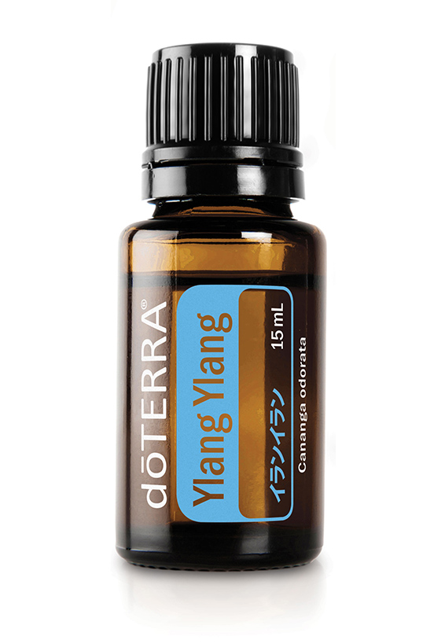

イランイラン
ユニークな星の形をした花から抽出されるイランイランのオイルは、肌や髪にうるおいを与え、心を落ち着かせ、ポジティブな気持ちにしてくれます。
製品情報
熱帯で星型の花を咲かせるイランイランの木から抽出されるオイルは、香水やオイルトリートメントに広く使用されています。ジャスミンと同様、イランイランは何世紀にもわたり宗教儀式や結婚式に用いられてきました。その香りは、イライラや緊張感をほぐして、前向きな気持ちにさせてくれます。甘く濃厚な香りと、うるおいを与えるはたらきから、高価なヘアケアやスキンケア製品に使用されています。ブレンドする場合は、ベルガモットやゼラニウム、グレープフルーツ、ベチバーなどとよく合います。
使用方法
- エプソムソルトに加えて、リラックスしたバスタイムを。
- ディフューズし、フェイシャルミストとして使用し、健やかな肌を。
- 手首につけ、甘くフローラルな香水がわりに。
- ドテラココナッツオイルに加えて、ヘアコンディショナーに。
使用上の注意
- 肌に異常が生じていないかよく注意して使用してください。
- 肌に合わないときは、ご使用をおやめください。
- 妊娠中、授乳中の方、お子様は、ご使用前に医師または薬剤師にご相談ください。
- 乳幼児の手の届かない場所に保管してください。
- はじめてお使いになる際は必ずパッチテストなどでお試しのうえ、ご使用ください。